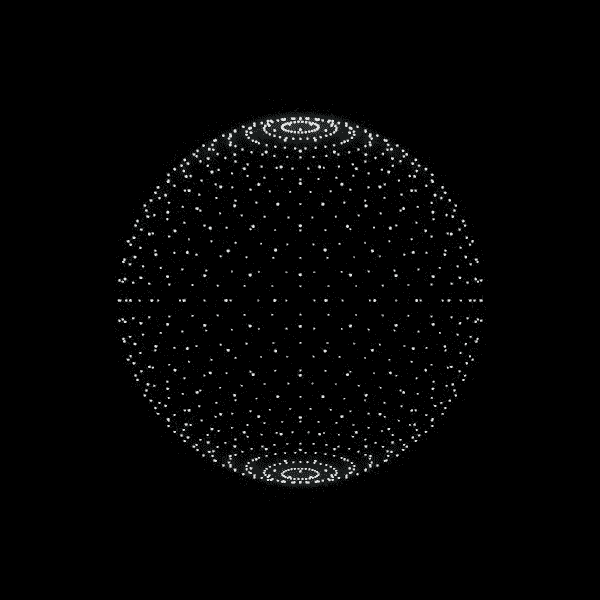

Large-Screen Visual Design & Graphic Design
大屏设计&平面等智慧能源中心数据化管理平台，以数字大屏为核心，实时整合用电、用水、设备运行、安检巡查及能耗预警等数据，实现园区能源可视化与智能化管理。通过多维数据分析与动态监测，提升运维效率，降低能耗成本，助力智慧园区数字化升级。



智慧能源中心数据化管理平台，以数字大屏为核心，实时整合用电、用水、设备运行、安检巡查及能耗预警等数据，实现园区能源可视化与智能化管理。通过多维数据分析与动态监测，提升运维效率，降低能耗成本，助力智慧园区数字化升级。
